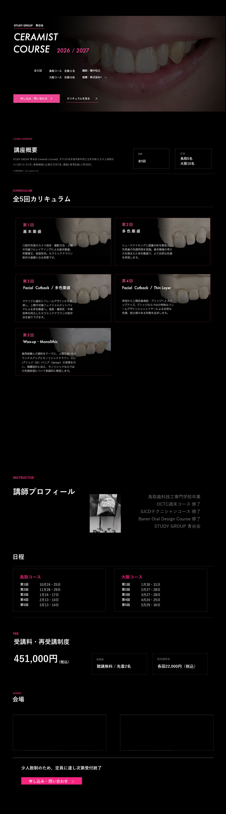

LPデザイン / Webデザイン
審美歯科LP ファーストビュー
自費診療・審美歯科サービスを想定したLPデザインです。清潔感と上品さを大切にしながら、無料カウンセリング予約へ自然につながる構成にしました。
写真と余白自然な導線
Portfolio
自主制作サンプルを中心に掲載しています。歯科・医療を軸に、専門的な情報の見せ方、余白、色、導線、言葉の整理を行っています。
LPデザイン / Webデザイン
自費診療・審美歯科サービスを想定したLPデザインです。清潔感と上品さを大切にしながら、無料カウンセリング予約へ自然につながる構成にしました。

LP制作 / セミナーページ
歯科技工士向け講座を想定したLPデザインです。講座概要、カリキュラム、料金、FAQ、申込導線まで、情報量の多い内容を整理しています。

説明資料デザイン / 図解デザイン
専門的な内容を、図解、比較カード、Q&Aに分けて、読み手が理解しやすい形に整理した説明資料です。

名刺デザイン / ブランドツール
白とチャコールグレーをベースに、余白と文字量を整え、清潔感と静かな信頼感が伝わる印象にしました。

サービス紹介画像 / バナー
提供サービスの内容や世界観が一目で伝わるように、ロゴ、コピー、制作範囲、安心感のある要素を整理した紹介画像です。

Instagram投稿画像 / 歯科
歯科アカウントの投稿を想定した画像サンプルです。親しみやすい表現と、Instagramらしい反応導線を意識して制作しています。

ショップバナー / ブランド画像
商品やブランドの雰囲気を伝える横長バナーです。写真の余白とロゴ配置を整え、上品で落ち着いた印象に仕上げています。

ショップバナー / SNS画像
華やかな写真を活かしたショップ向け画像です。投稿や商品ページの印象づくりに使えるよう、視線が止まる色と構図を意識しました。
Service
歯科・医療系の制作を中心に、HP・LP・資料づくり、Instagram画像、AIを活用した文章のたたき台作成までご相談いただけます。

Profile
Linea Lab Studioは、歯科・医療に強いHP制作、LP制作、Web実装、資料デザインなどを行っています。
AI活用やマーケティングについても学んでおり、制作物の目的や導線を意識したデザインを心がけています。
歯科の現場経験もあるため、医療・美容・専門サービスなど、内容をわかりやすく伝える必要があるデザインも対応可能です。
Contact
作りたいものがまだ決まっていなくても大丈夫です。
内容を確認しながら、必要な制作物や進め方を一緒に整理していきます。